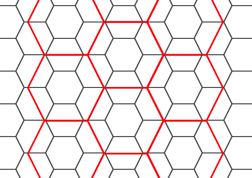

Name
ST_HexagonGrid — 引数ジオメトリの境界を完全にカバーする六角形とセルインデックスを返します。
Synopsis
setof record ST_HexagonGrid(float8 size, geometry bounds);
説明
平面の六角形タイルの概念から始まります。(地球の六角形タイルではなくH3タイルスキーマではありません)。平面 SRS とエッジサイズを与えると、SRS の原点から始まり、平面の一意な六角形のタイル、すなわち Tiling(SRS, Size)が一つ存在します。この関数は、指定されたTiling(SRS, Size)内の六角形が指定された境界を覆っているかどうかという質問に答えます。

出力六角形のSRSは境界ジオメトリのSRSです。
六角形の辺の長さを2倍または3倍にすることで、元のタイルに適合する新しい親タイルが生成されます。残念ながら子タイルが完全に親タイルの中に入るような親六角形タイルを生成することはできません。

Availability: 3.1.0
例: 六角形の中の点を数え上げる
六角形タイリングに対してポイントをまとめるには、ポイントの範囲を境界として使って六角形グリッドを生成し、グリッドに空間的に結合します。
SELECT COUNT(*), hexes.geom
FROM
ST_HexagonGrid(
10000,
ST_SetSRID(ST_EstimatedExtent('pointtable', 'geom'), 3857)
) AS hexes
INNER JOIN
pointtable AS pts
ON ST_Intersects(pts.geom, hexes.geom)
GROUP BY hexes.geom;例: ポリゴンの六角形カバレッジの生成
ポリゴン境界ごとに六角形の集合を生成し、六角形とインタセクトしないものを除外すると、ポリゴンごとのタイルとなります。

州のタイルは、それぞれの州の六角形のカバレッジとなり、複数の六角形が州境界で重なります。
![[Note]](images/note.png) | |
LATERALキーワードは、FROMリスト内の、対象より前のテーブルを参照する時は、集合を返す関数に暗黙的に含まれます。 CROSS JOIN LATERAL、CROSS JOIN、指定なし、は、この例の同じ構成要素です。 |
SELECT admin1.gid, hex.geom
FROM
admin1
CROSS JOIN
ST_HexagonGrid(100000, admin1.geom) AS hex
WHERE
adm0_a3 = 'USA'
AND
ST_Intersects(admin1.geom, hex.geom)